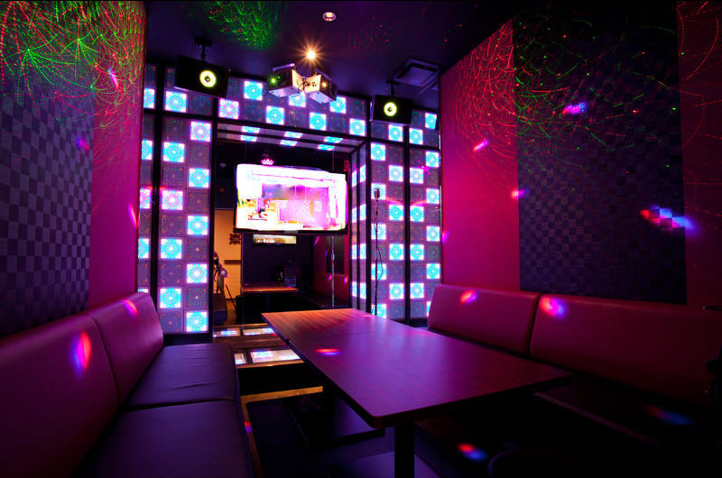
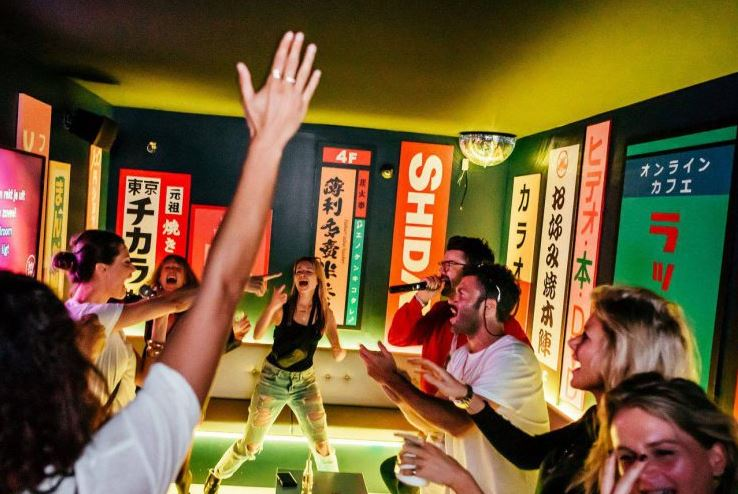

Disfruta de una noche especial dedicada a tus series y películas favoritas de anime.

Ambiente íntimo al estilo karaoke japonés con esencia andaluza.

Celebra cumpleaños y despedidas con luz neón y alegría sureña.
Reserva tu sala en segundos y empieza la fiesta.
15 de Marzo
Especial openings y endings de tus series favoritas.
22 de Marzo
Compite y gana premios cantando tus mejores canciones.
Disponible todo el mes
Descuentos especiales en reservas grupales.